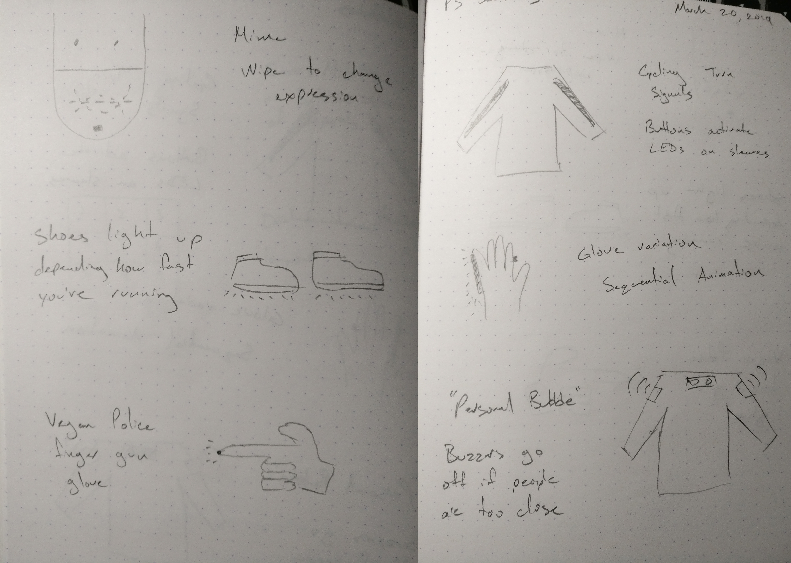
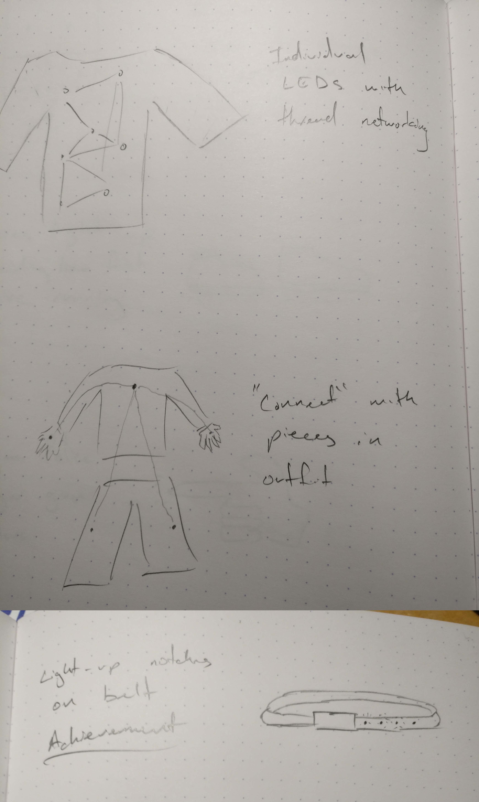
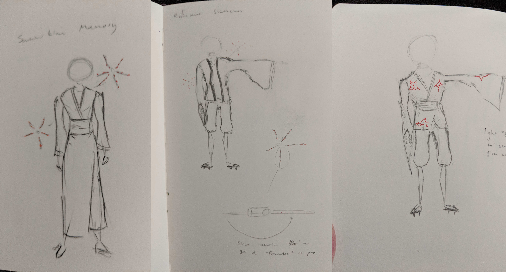
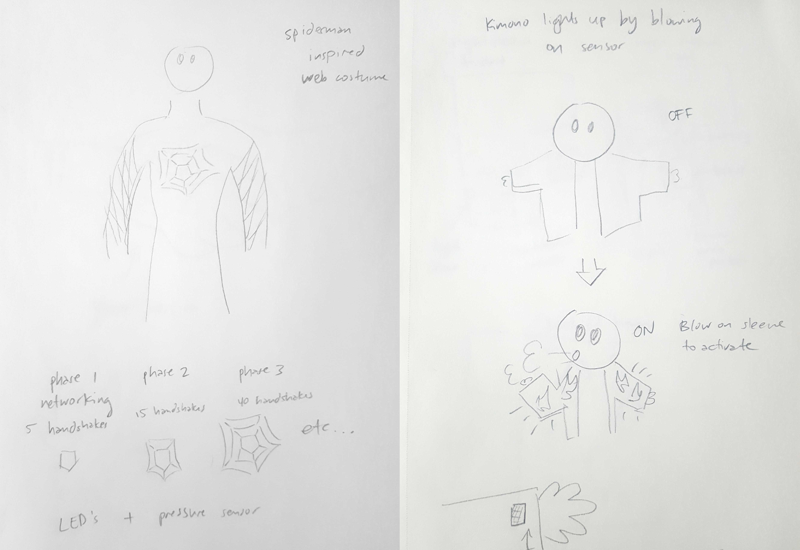
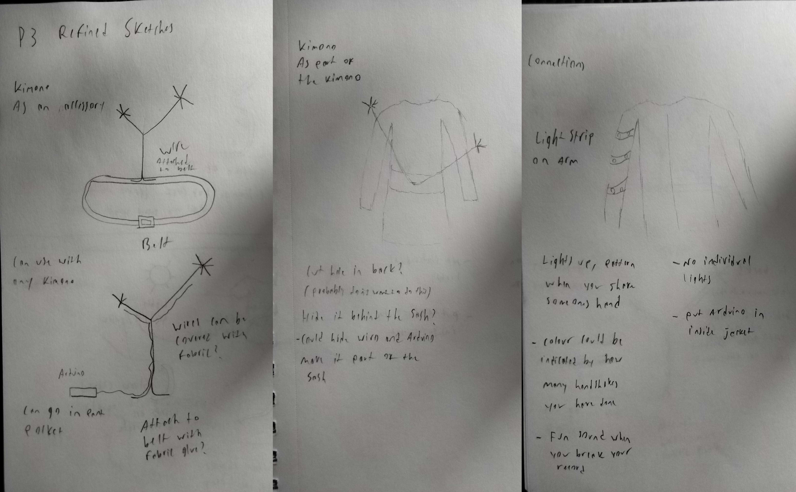
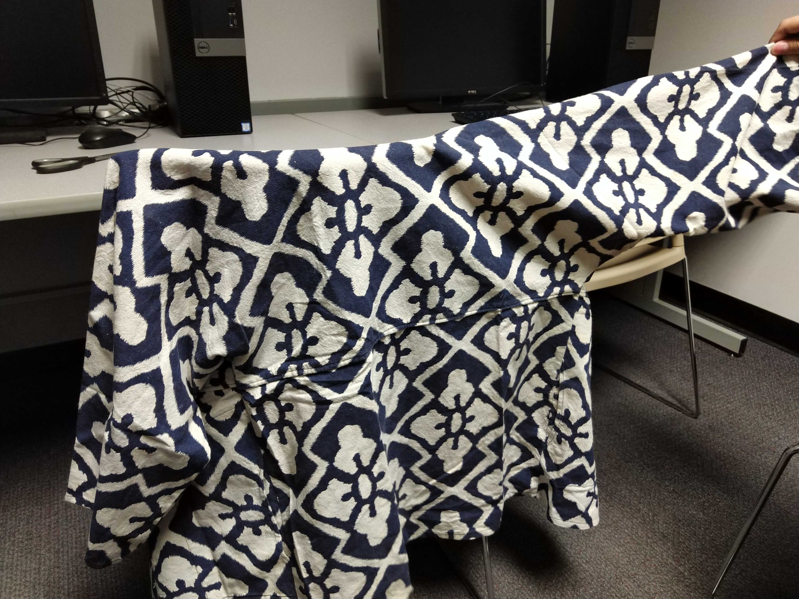
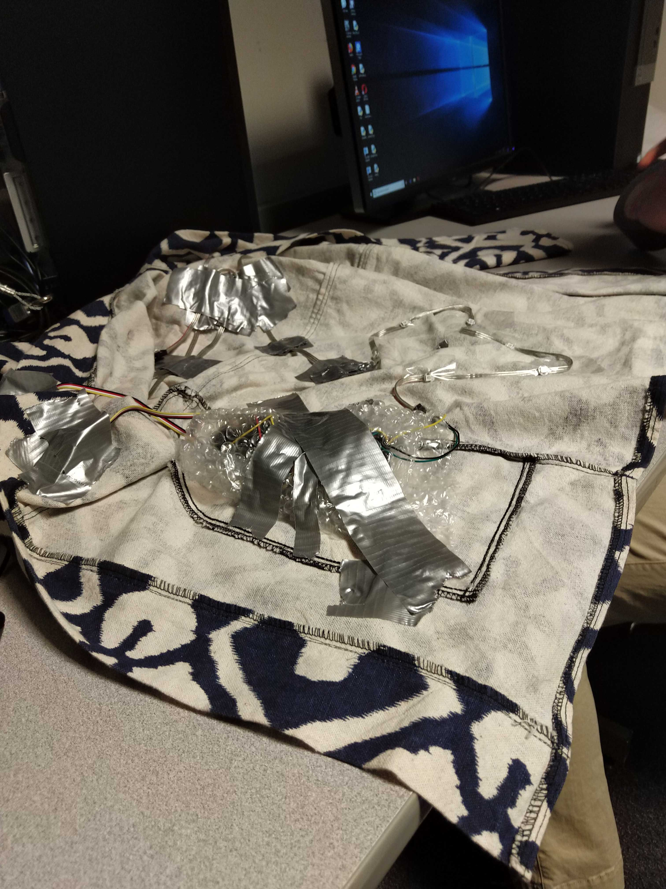
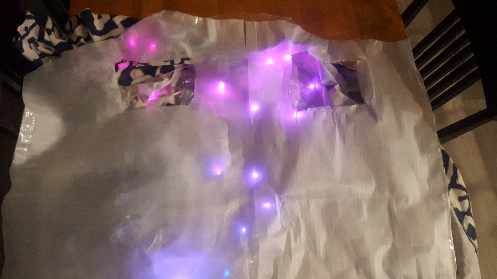
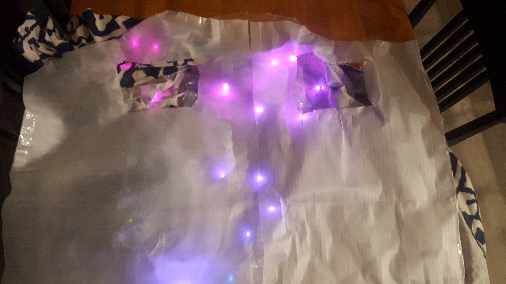

P3 - Fashion Technology
The objective of P3 was to create a fashion tech garment with Arduino, with an inspired story or purpose.
Out of the initial sketches that were presented in class, Neil's ideas of the networking shirt and summer robe received the most feedback and my team decided to iterate and refine on those ideas.
After reviewing our refined sketches, the networking idea was scrapped since most refinements of it were based on the same idea just with different garments.
Neil designed different ways the LEDs could represent fireworks:
Fran iterated on the networking and summer garment ideas, incorporating themes:
Tyler came up with ideas to mount the LEDs in a floating pattern behind the wearer:
The final product was a shirt based on Neil's story of his home country, Thailand. His memories of missing the hot summer nights watching the fireworks resulted in this fashion technology piece that, based on the ambient temperature and light, lights up a series of LEDs on a traditional garment.
 In order to diffuse the LEDs, we created a liner vest made of foam and plastic to be worn inside. We chose this solution as opposed to the back-mounted floating LED frame since it was more flimsy, less diffused, and did not represent fireworks as well. All the LEDs, wiring, and Arduino are attached to the liner, so the outer garment can be changed out.
 

When it is cool and light out, it appears as a normal shirt. But when the light sensor detects that it is dark out, and the temperature sensor measures above a specific temperature, the LEDs light up to mimic fireworks. Futhermore, the LEDs are placed in a way to line up with the flowers on the shirt as the word for "firework" in Neil's language is directly translated to "fire flower".